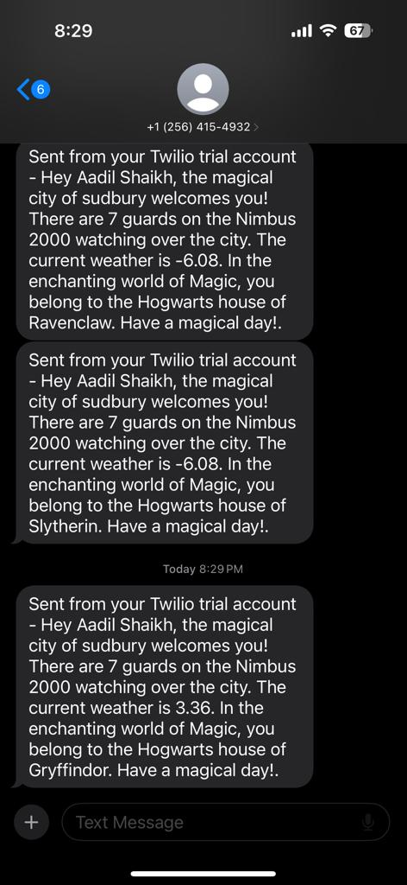

Enchanted Messaging: Python's API Alchemy
Connecting data
Integrating Harry Potter, Weather, and Space APIs with Twilio for SMS Service
Introduction
This project showcases the fusion of multiple APIs – Harry Potter, Weather, and Space – orchestrated through Flask and Twilio, resulting in a delightful SMS service. The code intricately combines diverse data sources, sending out dynamic messages to a specified phone number.
Key Elements of the Project
- API Integration: Three distinct APIs – Harry Potter, OpenWeatherMap, and OpenNotify – have been harmonized to collect data elements for crafting engaging messages.
- Twilio Integration: Twilio, a cloud communications platform, has been leveraged to facilitate the sending of tailored messages via SMS.
- Flask Web App: A Flask-based web application offers a simple button interface for triggering the API calls and subsequent message delivery.
Technical Overview
- Flask Framework: The project harnesses Flask, a Python web framework, to manage the backend logic, API calls, and message compositions.
- API Data Usage: Harry Potter API fetches character-related information, while OpenWeatherMap provides current weather details based on the specified location. OpenNotify retrieves data about people currently in space.
- Twilio Messaging: Messages constructed from the API data are transmitted as SMS to a designated phone number using the Twilio API.
Code Structure
- get_char(): Fetches character information from the Harry Potter API and forms engaging messages based on the fetched data.
- people_space(): Extracts the count of people currently in space using the OpenNotify API.
- get_weather(): Utilizes the OpenWeatherMap API to gather real-time weather data for a specified city.
The code architecture consists of modularized functions handling distinct tasks:
Final Output
Upon triggering the application, an SMS message is generated, combining elements from the Harry Potter universe, current weather information, and the count of individuals in space. The messages are dynamic, changing with each execution due to the nature of the APIs used.
This project highlights the seamless amalgamation of diverse APIs, demonstrating the potential for creative and dynamic data utilization through a unified messaging system.
